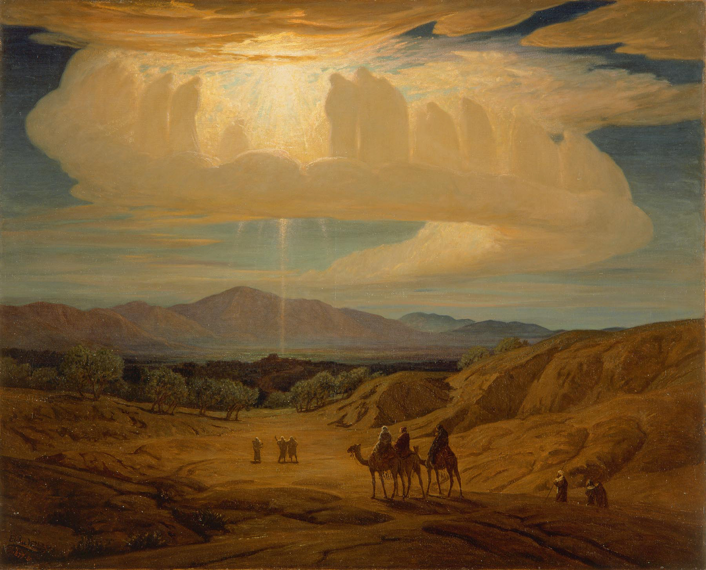
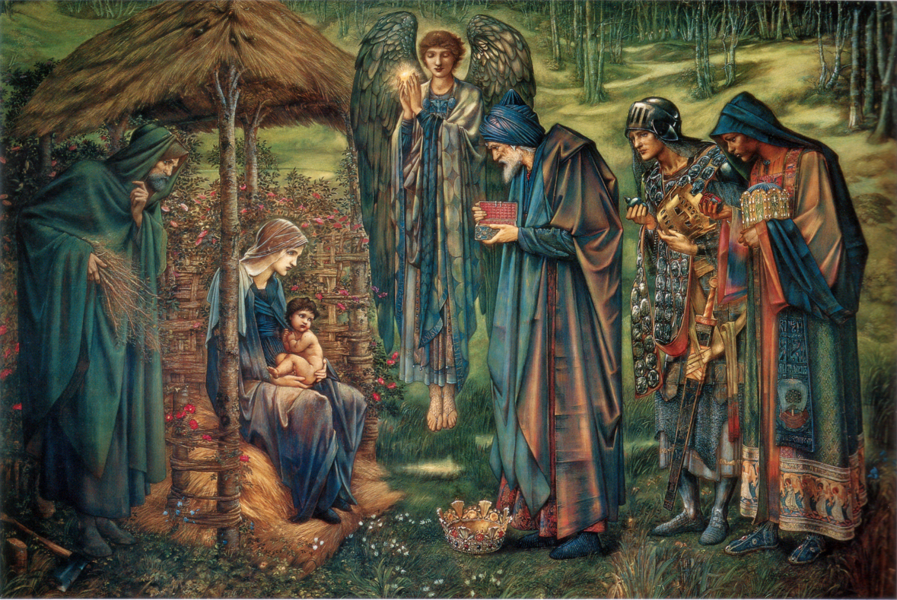
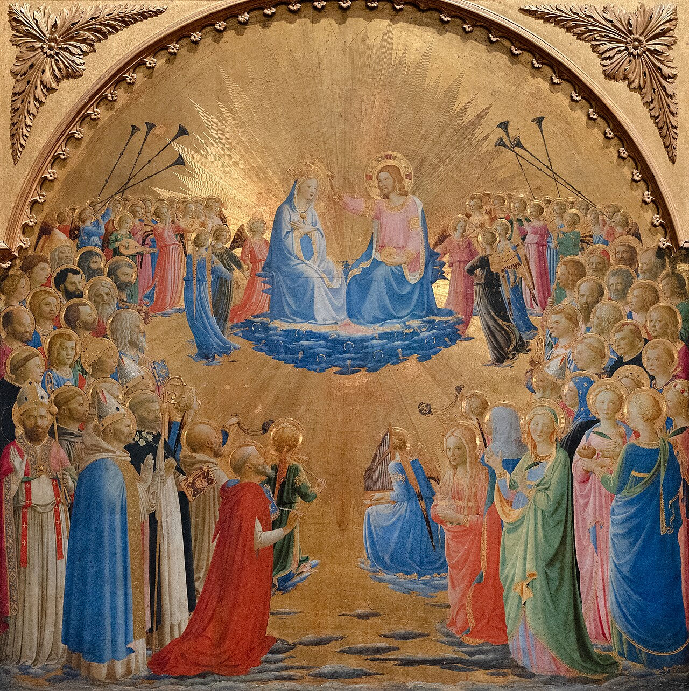

(10 min. read)

In the great deep sky the stars spin, and down to earth the brightest star in the sky bows low.
Below the bowing star there is a child. At his laugh the universe springs to attention; the winds fly forward, the earth stands still, the cows lift their heads and the lamb turns its ear, and above them the brightest star in the sky bows down. Here, here is the greatest thing to ever happen. The word that spoke the wild into life is making his first coos This child’s voice can rend rocks in two. With a chuckle he could raise a mountain or rip apart the sky. By lifting a finger he could shatter the sun, scattering bright light across the galaxy, ripping a crevice into space and time that shouts an inescapable void absorbing and snuffing out all the matter sucked into its pull; earth mars, jupiter, saturn, mercury, venus, neptune all becoming less than a thought in the wake of the annihilating force as all humanity was and is has entered the abyss of non-existence. Aww look, the child just stuck out his tongue.
Men who watch the stars have journeyed here. They saw the brightest star in the sky bow down and are here to see the cause. They do not know the great power that sits in his mother’s lap pointing at the donkey. Oh that donkey does have a funny face! Yeah he does! Aw, yeah he does!
The men who watch the stars have brought gifts. They are unloading them from their wagon and giving them to the child… Why? Why would the voice from the heavens need all this metal? He called the first man Adam from the dust, what would he possibly do with some gold. Do they think they can appease him? All these hunks of rock might as well be straw, at least with straw he could rest his head. This child’s destiny is more than earthly kingship. He is not to be some petty king collecting taxes. This child is here for such a grand purpose that has no need of gold or whatever earthly wisdom these men think they can provide.
The slightly misguiding men who watch the stars have also brought frankincense and myrrh. Now we are getting somewhere. These gifts are still less than straw to the child, but he loves these men so they mean much more to him. These are gifts of love and devotion. They are following the example of the bowing star, there is nothing this child needs they can provide, but this is the greatest thing for them to do. They are giving the gift of their love to the incarnate deity. Oh Mary, he drooled on you, let me get you another towel.
After a time the men who watch the stars leave. The child sends an angel to guide them home safely. The stable is no more perfect by their absence than their prescience. The greatest thing has happened here, the child has made this place perfect. The stars spin above, the moon travels along its course, the brightest star in the sky bows low.
The child’s earthly father is nervous. There is much in this world who can’t stand to be in the presence of this child. Both the evil prince below and the princes of the earthly world see the end of their kingdoms in this child. How dare this baby be born on their soil!? They took this land with deception, war, and bloodshed. This earth BELONGS to them. If they don’t act now this child will ravage all they’ve tried to build here. Every tower and fortress they laid, every army they’ve raised could at any moment be crushed by the hand currently grasping for his mother’s breast. Awww, he is hungry. The princes shake in anger.
The princes must do something. Quick! Summon the legions, call the generals. They must kill this baby before it is too late. Go! Go! Go out! Take any child you can find and kill it! Slaughter and butcher every baby in the world! The princes know this is desperation, they know they have lost. They know it will not work. One of the lieutenants asks the dark prince why they fight when they know they’ve lost. The prince wheels on the lieutenant and tackles him to the ground. The prince pounds and smashes the lieutenant, smashing his nose into his face and gouging his eyes. It is not all lost. This prince will eventually get his satisfaction. He has been promised a chance to rip his baby limb from limb just as he assaults his lieutenant now. Humanity has been ransomed. The king has promised to give the child to him in exchange for humanity. The prince can’t wait to kill the child.
One day he will be able to put his fingers around the child’s throat and crush. He will smash his head against the ground. He will kick and stomp on his body, relishing every second. He will whip the boy, tearing flesh from bone with his cat-of-nine-tails. He will mock and throw a robe on him. Hah! He is the king after all he should have a robe! The robe will bind to his skin so when he falls the robe will move and rips the wounds open anew. He will weave a crown of barbs and shove it onto his head. Blood from the world’s creator will burst and flow down his face. The prince will force the baby to carry a log through the streets, and the humans he loves so much will join in in taunting him. They will spit insults and hurl stones at him. They will ridicule and demean. To the prince it will be sweeter than wine.
Finally, the prince will take a hammer and pound iron into the child’s arms. He will smash metal into his legs, but not break the legs. He will not break the legs so the next part can be as long as possible. The prince will raise this child up on a cross, lifting him high for all to see. The world will stand and gaze at this humiliated near-corpse. To breath the child will have to pull himself up by his shattered hands and feet to ease pressure from his lungs. The same breath that spoke the world into existence will come at awful pain as he needs to use his nailed arms and legs to lift his chest up. Every moment will be agony for this child as he slowly dies and runs more and more out of strength.
Much time will pass then, the child pulls his body up, barely draws a breath, and relaxes down, blood flowing down his arms and the wood of his cross. The child’s mother will be there, watching it happen the whole time. She will weep as her child’s life comes to an end. Every agonizing breath he takes will be like a sword driven through her heart.
Eventually the mocking crowds will grow bored and leave. The only ones left are a small fraction of his followers that stay. Most of his followers will move on, as if the years they spent with him never happened. Now it’s just the child and a small dwindling handful of people watching him die. Some of the followers will take a spring of hyssop soaked in bitter wine to give it to the savior for his final drink on earth. As he sucks the wine out of his chapped lips he will say his final words: “It is finished”. After that, the breath that created the world will cease.
Then the world will go dark. For the first time, the light that bowed low at his birth will disappear from the sky. The object of the light’s devotion is gone, he has gone to his heavenly father, he is not here. There is no need for the light here anymore.
Weeks later, some of those who loved the child gather with his mother. They mourn his death and remember the way he laughed, the way he spoke. As they sit and remember they hear a strong driving wind in this crowded room and a great roaring sound; something new is happening here. The Son has returned to his Father so he can send gifts down from above. A flame bursts above the child’s mother and all his disciples. The star that bowed down to worship the child is now resting upon each of those who loved him. The flame transforms and kindles a new life in the humans that has never been seen before. Something new is happening here, the greatest thing is happening here; humans bear the sign of divinity. Humans hold the very essence of God inside themselves.
The prince screams in hatred. So soon after his victory of killing the child, the victory is robbed by something greater than the prince ever thought possible. As he realizes what has happened his armies are instantly driven back by the force now wielded by the humans. The dark prince cannot stand against them and is driven to his innermost fortress. The hosts of heaven are storming his gates, smashing and destroying every tower and fortress he built, routing every army he raised. The iron gates he built melt like wax before their power, releasing captives and restoring light to the world.
After centuries of war he is left with nothing. His castles plundered, his kingdom in ruin. He looks up from his shattered throne and sees the mother of the child looking down at him. What? What is she doing here? She and her child have already destroyed everything. Why does she still need to come here?
The mother extends a hand and in it is a glowing ball of light, a light brighter than the prince has seen in a long time, but a light he still recognizes. That is the light that proclaimed the child’s birth, the light he was supposed to carry, the light that was given to humanity. The child’s mother is offering him the chance to come back, to come back to the fold of God. He could once again be God’s Lucifer…

“NO!” Rage boils inside him. The enemy thinks him weak! He will never go back. After all that has happened he could never allow himself to return. The prince shouts and insults the woman. She is the most despicable woman that has been born of men. She believes she is perfect but is the worst of them all. “NO!” MAY ALL OF HEAVEN WITHER AND ROT! MAY ALL THE HOSTS DEPART AND LEAVE ME ALONE!”
The woman’s face turns to sadness, almost as if she is upset?
“THE ARROGANCE! GO AWAY!”
The woman slowly turns to go, leaving the prince alone in the prison he created. The Prince could not stand to be God and so he never will. The mother of the child mounts her throne in Heaven beside her son. Around them angels and saints roar their praise to God. Blessed are you Lord of Heaven and Earth. Blessed be your firmament. Blessed be your throne. Blessed be the race you won with your own blood.

(for art I like but did not use click here)